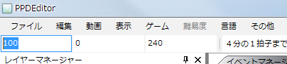
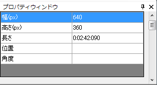
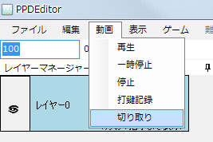
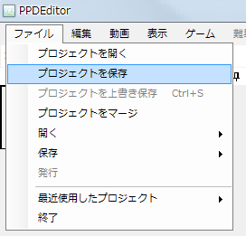

まず、対象の動画（の曲）のBPMを測定します。
BPMとは１分間に何回ビーとするか、すなわち曲の速さを表します（大きければ大きいほどテンポの速い曲）
PPDEditorにはBPM測定という付属のBPM測定機能があります。
うまくはかれない場合にはGoogleなどで「曲名 BPM」などで検索してみるといいでしょう。
あるいはmp3音源を解析して自動でBPMを計算する「MixMeister BPM Analyer」といったサードパーティのフリーソフトウェアもあります。
ですが、こういった数値の信憑性はいささか欠けているので、やはり一度は手動で測定し合っているか確認しましょう。
BPMが測定できました。
測定されたBPMをツールボックス一番左のテキストボックスに入力します。
(マウスをホバリングするとBPMのツールチップが表示されるテキストボックスです）

動画のクリッピング設定を行います。
現在の動画のサイズはプロパティウィンドウの部分に書かれています。

PPDのウィンドウのサイズは16:9になっています(800*450px)
ですので16:9の動画ソースに対してはクリッピングの設定は行う必要はないのですが、
そうでない動画ソースに対してはアスペクト比を固定するために設定を行う必要があります。
例えば、よくある例として512*384pxの動画(4:3のアスペクト比)の動画で上下に黒帯がついていることがあります。
この場合黒帯の部分を除けば16:9の動画ソースになることが多いので黒帯を除く設定を行います。
まず、動画→切り取りを選択します

以下のウィンドウが表示されます。

除くべき黒帯の幅を計算します。
黒帯の高さをblack_height,動画の幅をmovie_width,高さをmovie_heightとします。
すると以下の方程式が成り立たなければなりません。
movie_width:movie_height-2*black_height=16:9
⇔16*(movie_height-2*black_height)=9*movie_width
⇔black_height=1/2(movie_height-9/16*movie_width)
。。。
というのを以下のフォームで計算可能にしました。
上記の黒帯の高さを先の切り取りウィンドウの上と下に入力しOKを押します。
すると動画の切り取りが行われ、16:9の動画表示になります。
別の例として、黒帯なしの512*384pxの動画ソース(4:3)に対して左右に黒帯を追加してアスペクト比を(4:3)にしたい場合もあります。
その場合は、左と右に-100を入力してください。(上と下は0)
設定ファイルライターを表示させて、情報を入力します。

サムネの開始時間、サムネの終了時間、開始時間、終了時間は右の三角を押して「タイムラインから取得」を選択すると
動画の現在の時間を入力することが出来ます。
サムネの開始時間は、PPDでのメニュー画面で再生開始される時間です。サビの開始時間がいいと思います。
サムネの終了時間は、PPDでのメニュー画面で再生終了される時間です。サビの終了時間などでいいと思います。
開始時間は、ゲームでの動画の開始時間です。動画によって変わりますが、普通は０でいいです。
動画の始まりが急である場合には、-1,-2などで動画の開始を遅らせることができます。
終了時間は、ゲームでの動画の終了時間です。動画の最後でいいでしょう。
各難易度ですが、好きに決めてください。自分が表示したいものを指定できます。一般には、★×○(丸には数字)が現状では多い気がします。
配布前に決定しても構いません。
BPMには測ったBPMを入れましょう。
動画の各カットは、先ほど設定した動画の切り取り設定を入力します。0なら0を全てに入力してください。
ここで、一度プロジェクトを保存します。
プロジェクトの新規作成を使ってプロジェクトを作った場合には既にプロジェクトが存在しているのでCtrl+Sあるいはファイル→プロジェクトを上書き保存を選択してください。
以下は、プロジェクトの新規作成を使わずに設定を行った場合の保存の仕方です。
ファイル→プロジェクトを保存を選択します。

ダイアログが表示されるので、ファイル名を「曲名.ppdproj」にして保存します。

次回からは「プロジェクトを上書き保存」を選択することで上書き保存されます。
またプロジェクトを開く場合は、保存した「曲名.ppdproj」を選択してください。
次は、マークの打ち込みを行います。
次へ